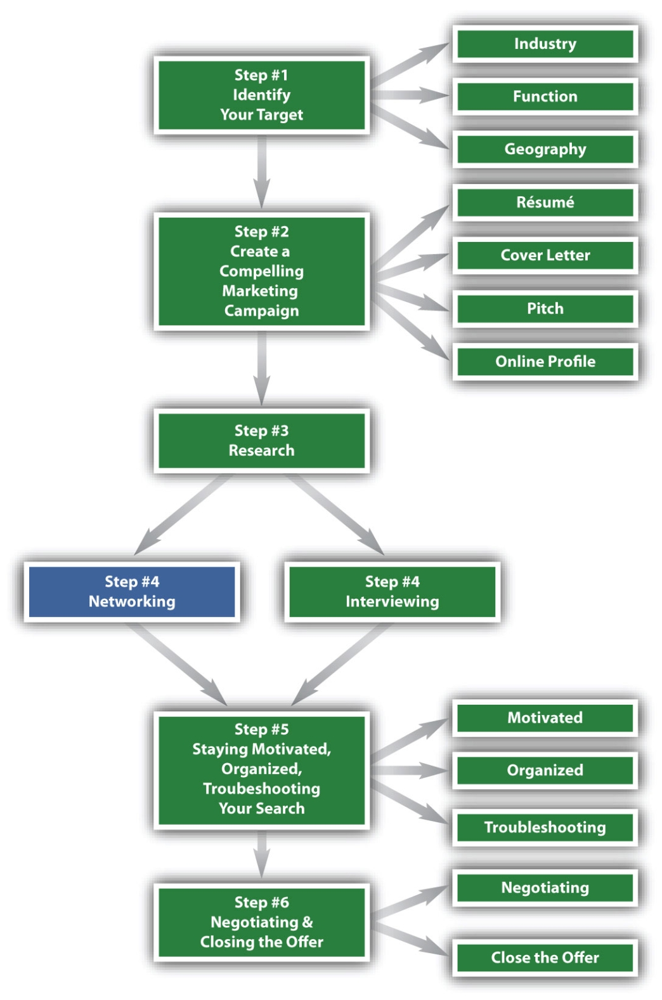

Figure 7.1 The Six-Step Job Search Process—Step 4
Networking Effectively is Crucial to Your Job Search
In this textbook, we have completed the first three steps in a job search:
The next step is Step 4: Networking and Interviewing. The two are combined because they are complementary: the more effectively you network, the more effectively will your efforts result in an interview. In addition, networking can also be considered a mini-interview because the more you impress a contact, the more likely it is that person will help you secure a real interview. For the purposes of this chapter, however, we’ll focus on networking only and Chapter 8 "Step 4 (Continued): Master the Interview" will focus on interviewing only.
Definition of Networking. You can look up the word “networking” in many dictionaries, and you’ll find many different definitions. One of the best definitions for networking comes from an extremely talented speaker and business coach, Bob Burg, who defines it as such:
“Networking is defined as establishing a long-term, mutually beneficial relationship of give and take, with the emphasis on the give.”Bob Burg, "Endless Referrals" (lecture, East Elmhurst, NY, October 22, 2008).
This is an exceptional definition for the following reasons:
Another universal truthSomething that is true all of the time, in every instance. is that the more you give, the more you will get. A genuine quality of giving will separate you from other networkers. Being genuinely interested in finding out about a person and wanting to know them well enough to positively affect their career, their lives, and their interests is a huge differentiator.
Quality, Not Quantity!. Networking isn’t about quantity; it’s about quality. We all know more people than we realize and we have numerous opportunities to meet new people every day. Just don’t forget that after you meet someone, unless you maintain and expand that relationship, that person isn’t really part of your core network. Networking isn’t just about approaching people; it’s about following up.
The Power of Networking. People naturally want to network with people who they know, like, and trust. Once these criteria have been met, people will generally open their networks up to you.
It’s a given that one person knows 250 people, give or take. Most people could invite about 250 people to their wedding and have approximately 250 visitors at their funeral.
If you know, like, and trust another individual, and therefore open your network up to that person, they will have access to a network of 500 individuals:
their 250 contacts + your 250 contacts = 500 contactsYour need to know 250 people might be intimidating, but let’s start with about 100 people you may know:
In addition to who you know now, this chapter will give you strategies for building more networking contacts. Some useful venues include the following:
The power of networking is limitless. Most individuals will use LinkedIn.com to keep in contact with their networks. Some individuals are open networkers and will connect with anyone who wants to connect with them. Others will be more discriminating and connect only to those people they know well. Either way, it’s a huge benefit to keep in touch with your contacts when they move from company to company and as they change e-mail addresses. It’s estimated that Generation YAnyone born between 1980-1995. (anyone born between 1980-1995) will change jobs close to twenty times in their lifetime. Keeping in touch with individuals this way can be very convenient and beneficial.
The Benefits of Networking. Networking has countless benefits. Aside from the social benefits of building relationships and keeping in touch with friends and valued acquaintances, networking yields other advantages:
Networking enhances our lives in many ways. You can meet interesting people who share their life experiences, you can gain access to information you may never have known, and you can have access to career opportunities that otherwise would be out of your reach. The more effectively you network, the more opportunities will be presented to you. This chapter will outline strategies to build and expand your network so those opportunities are within your reach.